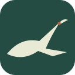

South Central Kentucky
Crane Watch
Glasgow · Barren River Lake · Sandhill crane activity
Waiting for monitoring
The app will show recent eBird reports after cloud monitoring is configured.
Largest reported flock
—Past 48 hoursReporting sites
—Past 48 hoursRecent reports
No observations loaded yet.
Recent activity
Largest single report per check, not a census or total population.iPhone notifications
Notifications not configured.
Install ntfy for iPhone and subscribe to your alert topic. In Safari, use Share → Add to Home Screen to save this dashboard as an app icon.
Understanding these sightings
Reports come from bird observers and may be delayed. A peak alert means one recent flock of at least 500 birds or at least three sites with 100+ birds each. It does not establish the annual migration peak.
No monitoring check yet.GitHub scheduled monitoring is best-effort. Reports may be old, incomplete, or duplicated across observers; this application is not live tracking.